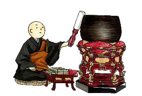

Gongs-Bells-Drums
Many instruments are used during a Buddhist service to help signal events and keep beat during chanting. Here are a few.
Moku-sho
A type of wooden drum (moku-sho) is used to keep the beat during chanting of the Lotus Sutra and Odaimoku (sacred title). This instrument has a high pitched sound that can be heard over the chanting and drumming common in Nichiren Shu Temples. The moku-sho in the Las Vegas Temple is up beside the head ministers seat. Another wooden drum used in ceremony is called a moku-gyo. Also known as a fish drum because of its round shape with a dragon or fish carved into it. It is used for a more subdued sound, usually at funerals and memorials were drums are not used. A moku-gyo is seen in the picture of the Altar at the Las Vegas Temple in the lower left.
Kana-Maru
Many bells are used during ceremony. Each bell has a different sound which helps everyone know where we are during the service. The kana-maru is a large bowl shaped bell used to signal the beginning and ending of service and also the beginning and ending of each section of the Lotus Sutra chanted. A smaller bowl shaped bell called the inken is used to signal different functions such as the singing of Shomyo (Buddhist Hymns). The head minister uses a flat bell called the kei (just to the right where the head minister sits) to signal each new part of the service.Taiko
In Nichiren Shu we use drums while chanting the title of the Lotus Sutra (Odaimoku). A large taiko is used during the service to help keep the beat and each member of the Sangha may also use a hand taiko. The heavenly sound reverberates through the universe to proclaim the Dharma.